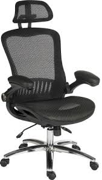

Ergonomic mesh
Office task chairs are designed to images/offer the necessary back support and can adjust to every size and body type. The angle your legs are positioned in while sitting is also crucial for maintaining a good posture. Make sure to adjust your chair so that your knees are at a 90 degree angle with your thighs being parallel to the floor.he chair should be able to turn easily allowing the user to reach areas of their desk without straining themselves by trying to drag the chair along, for example. So, there you have some examples of qualities all good, ergonomic office chairs will have.
A good ergonomic chair can help your back while you sit at your desk, even keep your legs, shoulders, and neck comfortable while you work.
home